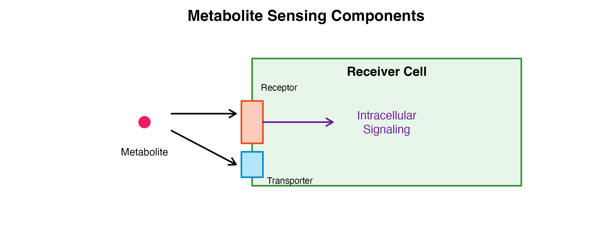

Overview
This tutorial provides a deep dive into the production and sensing inference steps, explaining each parameter and showing how to interpret the results.
library(scMetaLink)
library(Matrix)
# Load example data
data(crc_example)
# Create object
obj <- createScMetaLink(crc_expr, crc_meta, "cell_type")Part 1: Metabolite Production Potential
Understanding Production
Production potential reflects a cell type’s capacity to: 1. Synthesize metabolites via enzymatic reactions 2. Secrete/release metabolites to the extracellular space

The inferProduction() Function
obj <- inferProduction(
obj,
method = "combined", # Expression scoring method
mean_method = "arithmetic", # Mean calculation method
min_expression = 0, # Minimum expression threshold
min_pct = 0.1, # Minimum % of expressing cells
consider_degradation = TRUE, # Account for degradation enzymes
consider_secretion = TRUE, # Weight by extracellular localization
normalize = TRUE, # Normalize across cell types
verbose = TRUE
)Parameter Deep Dive
1. method: Expression Scoring
# Compare different scoring methods
obj_mean <- inferProduction(obj, method = "mean", verbose = FALSE)
obj_prop <- inferProduction(obj, method = "proportion", verbose = FALSE)
obj_comb <- inferProduction(obj, method = "combined", verbose = FALSE)
# Compare for lactate
lactate_id <- "HMDB0000190"
par(mfrow = c(1, 3))
if (lactate_id %in% rownames(obj_mean@production_scores)) {
barplot(sort(obj_mean@production_scores[lactate_id, ], decreasing = TRUE),
las = 2, main = "method = 'mean'", col = "#64B5F6", cex.names = 0.7)
barplot(sort(obj_prop@production_scores[lactate_id, ], decreasing = TRUE),
las = 2, main = "method = 'proportion'", col = "#81C784", cex.names = 0.7)
barplot(sort(obj_comb@production_scores[lactate_id, ], decreasing = TRUE),
las = 2, main = "method = 'combined'", col = "#FFB74D", cex.names = 0.7)
}Figure 1: Expression Scoring Method Comparison. Lactate production potential across cell types using three different scoring methods. ‘mean’ uses average expression, ‘proportion’ uses percentage of expressing cells, and ‘combined’ multiplies both for a balanced score.
Recommendations: - combined: Best for
most cases, balances expression level and consistency -
mean: When you trust raw expression values -
proportion: When dropout is severe and you only care about
on/off
2. mean_method: Robust Mean Calculation
For single-cell data with high dropout and outliers, trimean provides robustness:
# Compare arithmetic vs trimean
obj_arith <- inferProduction(obj, mean_method = "arithmetic", verbose = FALSE)
obj_trim <- inferProduction(obj, mean_method = "trimean", verbose = FALSE)
# Correlation between methods
if (nrow(obj_arith@production_scores) > 0) {
cor_val <- cor(as.vector(obj_arith@production_scores),
as.vector(obj_trim@production_scores))
cat("Correlation between arithmetic and trimean:", round(cor_val, 3), "\n")
}
#> Correlation between arithmetic and trimean: 0.786When to use trimean: - High dropout rates (>50%) - Suspected outlier cells - When standard mean seems unstable
3. consider_degradation: Accounting for Metabolite
Turnover
When TRUE, production score is adjusted by subtracting
degradation enzyme expression:
obj_with_deg <- inferProduction(obj, consider_degradation = TRUE, verbose = FALSE)
obj_no_deg <- inferProduction(obj, consider_degradation = FALSE, verbose = FALSE)
# See the effect
cat("With degradation adjustment:\n")
#> With degradation adjustment:
print(head(sort(obj_with_deg@production_scores["HMDB0000190", ], decreasing = TRUE)))
#> Monocyte Gliacyte TAM Normal Macrophage
#> 0.9375074 0.5305421 0.5021831 0.4832566
#> Tumor Epithelial Normal Epithelial
#> 0.3845369 0.3664723
cat("\nWithout degradation adjustment:\n")
#>
#> Without degradation adjustment:
print(head(sort(obj_no_deg@production_scores["HMDB0000190", ], decreasing = TRUE)))
#> Normal Fibroblast CAF Monocyte SMC
#> 0.6240821 0.6076395 0.5739714 0.5331675
#> TAM Normal Macrophage
#> 0.5177441 0.50030884. consider_secretion: Extracellular Localization
When TRUE, metabolites known to be extracellular receive
full weight (1.0), while intracellular metabolites are downweighted
(0.5):
# Check extracellular metabolites
db <- scMetaLink:::.load_metalinksdb()
extra_mets <- unique(db$cell_location$hmdb[db$cell_location$cell_location == "Extracellular"])
cat("Number of extracellular metabolites:", length(extra_mets), "\n")
#> Number of extracellular metabolites: 1128
cat("Sample:", head(db$metabolites$metabolite[db$metabolites$hmdb %in% extra_mets]), "\n")
#> Sample: Sulfate Oxoglutaric acid Calcium Glycerol 17alpha-Estradiol AcetaldehydeExploring Production Results
# Get production score matrix
prod_scores <- obj@production_scores
cat("Production score matrix dimensions:", dim(prod_scores), "\n")
#> Production score matrix dimensions: 790 15
cat("Metabolites:", nrow(prod_scores), "\n")
#> Metabolites: 790
cat("Cell types:", ncol(prod_scores), "\n")
#> Cell types: 15
# Top producing cell types for key metabolites
cat("\n=== Top Lactate Producers ===\n")
#>
#> === Top Lactate Producers ===
print(getTopProducers(obj, "L-Lactic acid", top_n = 5))
#> cell_type production_score rank
#> 1 Monocyte 0.9375074 1
#> 2 Gliacyte 0.5305421 2
#> 3 TAM 0.5021831 3
#> 4 Normal Macrophage 0.4832566 4
#> 5 Tumor Epithelial 0.3845369 5
cat("\n=== Top ATP Producers ===\n")
#>
#> === Top ATP Producers ===
print(getTopProducers(obj, "Adenosine triphosphate", top_n = 5))
#> cell_type production_score rank
#> 1 SMC 0.6306768 1
#> 2 Pericyte 0.6202034 2
#> 3 CAF 0.5758405 3
#> 4 Normal Macrophage 0.5673444 4
#> 5 TAM 0.5539278 5Visualizing Production Patterns
# Heatmap of production scores for top variable metabolites
prod_var <- apply(prod_scores, 1, var)
top_mets <- names(sort(prod_var, decreasing = TRUE))[1:30]
# Simple heatmap
heatmap(prod_scores[top_mets, ],
scale = "row",
col = hcl.colors(50, "RdYlBu", rev = TRUE),
margins = c(10, 15),
main = "Production Potential (Top 30 Variable Metabolites)")
Figure 2: Production Potential Heatmap. Top 30 metabolites with highest variance across cell types. Row-scaled values show relative production potential. Clustering reveals cell types with similar metabolic production profiles.
Part 2: Metabolite Sensing Capability
Understanding Sensing
Sensing capability reflects a cell type’s capacity to: 1. Detect metabolites via membrane receptors (GPCRs, ion channels, etc.) 2. Uptake metabolites via transporters

The inferSensing() Function
obj <- inferSensing(
obj,
method = "combined", # Expression scoring method
mean_method = "arithmetic", # Mean calculation method
min_expression = 0, # Minimum expression threshold
min_pct = 0.1, # Minimum % of expressing cells
weight_by_affinity = TRUE, # Weight by binding affinity
include_transporters = TRUE, # Include uptake transporters
use_hill = FALSE, # Apply Hill function transformation
hill_n = 1, # Hill coefficient
hill_Kh = 0.5, # Half-maximal threshold
normalize = TRUE,
verbose = TRUE
)Parameter Deep Dive
1. weight_by_affinity: Binding Strength Weighting
When TRUE, receptors are weighted by their metabolite
binding affinity from MetalinksDB:
# Show affinity scores for a metabolite
receptors <- getMetaboliteReceptors("Adenosine", include_transporters = FALSE)
cat("Adenosine receptors with affinity scores:\n")
#> Adenosine receptors with affinity scores:
print(head(receptors, 10))
#> gene_symbol protein_type combined_score metabolite
#> 3132 P2RY1 gpcr 999 Adenosine triphosphate
#> 3135 CFTR other_ic 999 Adenosine triphosphate
#> 3104 P2RY2 gpcr 998 Adenosine triphosphate
#> 3187 P2RX1 lgic 998 Adenosine triphosphate
#> 3144 P2RX4 lgic 997 Adenosine triphosphate
#> 3150 ABCC8 transporter 997 Adenosine triphosphate
#> 3218 KCNJ11 vgic 995 Adenosine triphosphate
#> 3203 P2RX2 lgic 994 Adenosine triphosphate
#> 3209 ABCB1 transporter 994 Adenosine triphosphate
#> 3119 EGFR catalytic_receptor 988 Adenosine triphosphate2. include_transporters: Uptake Transporters
# Compare with and without transporters
obj_with_trans <- inferSensing(obj, include_transporters = TRUE, verbose = FALSE)
obj_no_trans <- inferSensing(obj, include_transporters = FALSE, verbose = FALSE)
cat("Metabolites detected:\n")
#> Metabolites detected:
cat(" With transporters:", nrow(obj_with_trans@sensing_scores), "\n")
#> With transporters: 496
cat(" Without transporters:", nrow(obj_no_trans@sensing_scores), "\n")
#> Without transporters: 385When to exclude transporters: If you only want receptor-mediated signaling (not metabolic uptake).
3. use_hill: Receptor Saturation Model
The Hill function models receptor binding saturation:
# Compare linear vs Hill transformation
obj_linear <- inferSensing(obj, use_hill = FALSE, verbose = FALSE)
obj_hill <- inferSensing(obj, use_hill = TRUE, hill_n = 1, hill_Kh = 0.5, verbose = FALSE)
par(mfrow = c(1, 2))
# Find a common metabolite
common_met <- intersect(rownames(obj_linear@sensing_scores),
rownames(obj_hill@sensing_scores))[1]
if (!is.na(common_met)) {
plot(obj_linear@sensing_scores[common_met, ],
obj_hill@sensing_scores[common_met, ],
xlab = "Linear Sensing Score",
ylab = "Hill-transformed Score",
main = paste("Effect of Hill Function on", common_met),
pch = 19, col = "#1976D2")
abline(0, 1, lty = 2, col = "gray")
}
# Hill parameter comparison
x <- seq(0, 1, 0.01)
plot(x, x, type = "l", lty = 2, col = "gray",
xlab = "Expression", ylab = "Sensing Score",
main = "Hill Function Parameters")
lines(x, x^1 / (0.3^1 + x^1), col = "blue", lwd = 2)
lines(x, x^1 / (0.5^1 + x^1), col = "red", lwd = 2)
lines(x, x^1 / (0.7^1 + x^1), col = "green", lwd = 2)
legend("bottomright",
legend = c("Linear", "Kh=0.3", "Kh=0.5", "Kh=0.7"),
col = c("gray", "blue", "red", "green"),
lty = c(2, 1, 1, 1), lwd = 2)
Figure 3: Hill Function Effect on Sensing Scores. Left: Comparison of linear vs Hill-transformed sensing scores for a metabolite. Points below the diagonal indicate saturation at high expression levels. Right: Different Kh values affect when saturation begins - lower Kh means earlier saturation.
When to use Hill function: - You expect receptor saturation at high expression - Modeling dose-response relationships - Biological realism is important
Exploring Sensing Results
sens_scores <- obj@sensing_scores
cat("Sensing score matrix dimensions:", dim(sens_scores), "\n")
#> Sensing score matrix dimensions: 496 15
# Top sensing cell types
cat("\n=== Top Glutamate Sensors ===\n")
#>
#> === Top Glutamate Sensors ===
print(getTopSensors(obj, "L-Glutamic acid", top_n = 5))
#> cell_type sensing_score rank
#> 1 Normal Macrophage 0.7624215 1
#> 2 TAM 0.6192208 2
#> 3 Tumor Epithelial 0.4362282 3
#> 4 Gliacyte 0.4255517 4
#> 5 Normal Fibroblast 0.4229089 5
cat("\n=== Top Adenosine Sensors ===\n")
#>
#> === Top Adenosine Sensors ===
print(getTopSensors(obj, "Adenosine", top_n = 5))
#> cell_type sensing_score rank
#> 1 Normal Macrophage 0.6479570 1
#> 2 TAM 0.5871354 2
#> 3 Pericyte 0.5663821 3
#> 4 Normal Fibroblast 0.4805927 4
#> 5 CAF 0.4760286 5Receptor Analysis for a Metabolite
# Get all receptors for a metabolite
cat("=== Serotonin (5-HT) Receptors ===\n")
#> === Serotonin (5-HT) Receptors ===
serotonin_receptors <- getMetaboliteReceptors("Serotonin", include_transporters = TRUE)
print(serotonin_receptors)
#> gene_symbol protein_type combined_score metabolite
#> 2284 HTR7 gpcr 999 Serotonin
#> 2383 HTR1A gpcr 999 Serotonin
#> 2287 HTR1B gpcr 998 Serotonin
#> 2332 HTR2C gpcr 998 Serotonin
#> 2385 HTR2B gpcr 997 Serotonin
#> 2271 HTR4 gpcr 990 Serotonin
#> 2304 DRD2 gpcr 989 Serotonin
#> 2333 HTR6 gpcr 987 Serotonin
#> 2398 HTR1E gpcr 987 Serotonin
#> 2273 HTR1F gpcr 985 Serotonin
#> 2326 HTR5A gpcr 973 Serotonin
#> 2359 DRD3 gpcr 964 Serotonin
#> 2484 TBXA2R gpcr 956 Serotonin
#> 2265 DRD4 gpcr 950 Serotonin
#> 2356 OPRM1 gpcr 948 Serotonin
#> 2386 OPRD1 gpcr 940 Serotonin
#> 2267 DRD5 gpcr 939 Serotonin
#> 2264 PPARG nhr 938 Serotonin
#> 2350 NTSR1 gpcr 938 Serotonin
#> 2502 NTSR2 gpcr 938 Serotonin
#> 2354 ADRA2A gpcr 937 Serotonin
#> 2519 CNR1 gpcr 937 Serotonin
#> 2390 OPN4 gpcr 936 Serotonin
#> 2401 HRH2 gpcr 936 Serotonin
#> 2416 MCHR1 gpcr 936 Serotonin
#> 2458 MC1R gpcr 935 Serotonin
#> 2286 NPBWR2 gpcr 934 Serotonin
#> 2374 ADRA1A gpcr 934 Serotonin
#> 2437 ADRA2C gpcr 934 Serotonin
#> 2516 TAAR1 gpcr 933 Serotonin
#> 2266 NMUR2 gpcr 928 Serotonin
#> 2269 ADRB1 gpcr 928 Serotonin
#> 2270 ADRB2 gpcr 928 Serotonin
#> 2276 LTB4R2 gpcr 928 Serotonin
#> 2280 UTS2R gpcr 928 Serotonin
#> 2285 GNRHR gpcr 928 Serotonin
#> 2290 SSTR4 gpcr 928 Serotonin
#> 2293 CCR3 gpcr 928 Serotonin
#> 2297 OPRK1 gpcr 928 Serotonin
#> 2298 HRH4 gpcr 928 Serotonin
#> 2299 PTGER1 gpcr 928 Serotonin
#> 2303 AVPR2 gpcr 928 Serotonin
#> 2307 CCR5 gpcr 928 Serotonin
#> 2310 CCR4 gpcr 928 Serotonin
#> 2311 ACKR3 gpcr 928 Serotonin
#> 2314 EDNRA gpcr 928 Serotonin
#> 2317 BDKRB1 gpcr 928 Serotonin
#> 2318 ADORA2A gpcr 928 Serotonin
#> 2321 GALR3 gpcr 928 Serotonin
#> 2325 GHSR gpcr 928 Serotonin
#> 2328 AGTR2 gpcr 928 Serotonin
#> 2329 MLNR gpcr 928 Serotonin
#> 2330 CXCR4 gpcr 928 Serotonin
#> 2338 GRPR gpcr 928 Serotonin
#> 2340 ADRA1D gpcr 928 Serotonin
#> 2341 PTGER3 gpcr 928 Serotonin
#> 2343 ADORA2B gpcr 928 Serotonin
#> 2348 NPFFR2 gpcr 928 Serotonin
#> 2351 ADRA1B gpcr 928 Serotonin
#> 2352 NPFFR1 gpcr 928 Serotonin
#> 2355 SSTR1 gpcr 928 Serotonin
#> 2358 SSTR2 gpcr 928 Serotonin
#> 2362 LTB4R gpcr 928 Serotonin
#> 2363 HCRTR2 gpcr 928 Serotonin
#> 2364 LPAR1 gpcr 928 Serotonin
#> 2366 PTGFR gpcr 928 Serotonin
#> 2368 PROKR1 gpcr 928 Serotonin
#> 2372 CCKBR gpcr 928 Serotonin
#> 2378 MC5R gpcr 928 Serotonin
#> 2380 MC2R gpcr 928 Serotonin
#> 2384 PTGER2 gpcr 928 Serotonin
#> 2391 ADORA1 gpcr 928 Serotonin
#> 2393 NMUR1 gpcr 928 Serotonin
#> 2396 RXFP4 gpcr 928 Serotonin
#> 2403 HCRTR1 gpcr 928 Serotonin
#> 2405 SSTR5 gpcr 928 Serotonin
#> 2407 GALR2 gpcr 928 Serotonin
#> 2415 PTGDR gpcr 928 Serotonin
#> 2419 AGTR1 gpcr 928 Serotonin
#> 2422 NPY2R gpcr 928 Serotonin
#> 2425 LPAR2 gpcr 928 Serotonin
#> 2427 MCHR2 gpcr 928 Serotonin
#> 2429 CCR9 gpcr 928 Serotonin
#> 2431 NPY5R gpcr 928 Serotonin
#> 2434 NPSR1 gpcr 928 Serotonin
#> 2436 OPRL1 gpcr 928 Serotonin
#> 2439 APLNR gpcr 928 Serotonin
#> 2441 QRFPR gpcr 928 Serotonin
#> 2442 RXFP3 gpcr 928 Serotonin
#> 2443 LPAR3 gpcr 928 Serotonin
#> 2447 CCKAR gpcr 928 Serotonin
#> 2449 GALR1 gpcr 928 Serotonin
#> 2452 ADRB3 gpcr 928 Serotonin
#> 2454 MC4R gpcr 928 Serotonin
#> 2460 OXTR gpcr 928 Serotonin
#> 2465 MC3R gpcr 928 Serotonin
#> 2467 CCR1 gpcr 928 Serotonin
#> 2470 PROKR2 gpcr 928 Serotonin
#> 2474 KISS1R gpcr 928 Serotonin
#> 2479 PTGIR gpcr 928 Serotonin
#> 2483 NMBR gpcr 928 Serotonin
#> 2485 AVPR1A gpcr 928 Serotonin
#> 2492 CNR2 gpcr 928 Serotonin
#> 2496 TRHR gpcr 928 Serotonin
#> 2497 PTGER4 gpcr 928 Serotonin
#> 2503 GPR65 gpcr 928 Serotonin
#> 2507 CXCR6 gpcr 928 Serotonin
#> 2515 NPY1R gpcr 928 Serotonin
#> 2524 NPY4R gpcr 928 Serotonin
#> 2530 EDNRB gpcr 928 Serotonin
#> 2531 HRH3 gpcr 928 Serotonin
#> 2370 GPR119 gpcr 393 Serotonin
#> 2466 RHO gpcr 375 Serotonin
#> 2279 GPR39 gpcr 373 Serotonin
#> 2347 FFAR4 gpcr 373 Serotonin
#> 2305 GPR62 gpcr 367 Serotonin
#> 2459 OPN5 gpcr 360 Serotonin
#> 2272 GPR27 gpcr 310 Serotonin
#> 2274 GPR19 gpcr 310 Serotonin
#> 2277 GPR176 gpcr 310 Serotonin
#> 2278 GPR61 gpcr 310 Serotonin
#> 2281 TAAR5 gpcr 310 Serotonin
#> 2296 GPR52 gpcr 310 Serotonin
#> 2312 GPR139 gpcr 310 Serotonin
#> 2315 GPR173 gpcr 310 Serotonin
#> 2322 GPR83 gpcr 310 Serotonin
#> 2323 GPR63 gpcr 310 Serotonin
#> 2336 BRS3 gpcr 310 Serotonin
#> 2344 OPN1LW gpcr 310 Serotonin
#> 2357 AVPR1B gpcr 310 Serotonin
#> 2360 GPR37L1 gpcr 310 Serotonin
#> 2367 PRLHR gpcr 310 Serotonin
#> 2377 GPR142 gpcr 310 Serotonin
#> 2379 GPR45 gpcr 310 Serotonin
#> 2381 GPR26 gpcr 310 Serotonin
#> 2394 OPN1SW gpcr 310 Serotonin
#> 2397 GPR85 gpcr 310 Serotonin
#> 2408 TAAR2 gpcr 310 Serotonin
#> 2410 GPR151 gpcr 310 Serotonin
#> 2420 GPR148 gpcr 310 Serotonin
#> 2433 GPR3 gpcr 310 Serotonin
#> 2450 GPR78 gpcr 310 Serotonin
#> 2451 TAAR8 gpcr 310 Serotonin
#> 2463 GPR150 gpcr 310 Serotonin
#> 2488 GPR22 gpcr 310 Serotonin
#> 2489 GPR12 gpcr 310 Serotonin
#> 2490 GPR135 gpcr 310 Serotonin
#> 2498 OPN3 gpcr 310 Serotonin
#> 2501 GPR88 gpcr 310 Serotonin
#> 2504 GPR6 gpcr 310 Serotonin
#> 2513 TAAR6 gpcr 310 Serotonin
#> 2521 GPR84 gpcr 310 Serotonin
#> 2532 GPR37 gpcr 310 Serotonin
#> 2282 HTR3B lgic NA Serotonin
#> 2283 SLC36A1 transporter NA Serotonin
#> 2292 HTR1D gpcr NA Serotonin
#> 2295 DRD1 gpcr NA Serotonin
#> 2402 CYSLTR1 gpcr NA Serotonin
#> 2468 SLC6A4 transporter NA Serotonin
#> 2493 HTR3A lgic NA Serotonin
#> 2506 HTR2A gpcr NA SerotoninPart 3: Comparing Production and Sensing
Which Cell Types are Producers vs Sensors?
# Get common metabolites
common_mets <- intersect(rownames(obj@production_scores),
rownames(obj@sensing_scores))
if (length(common_mets) > 0) {
# Average production and sensing per cell type
avg_prod <- colMeans(obj@production_scores[common_mets, ])
avg_sens <- colMeans(obj@sensing_scores[common_mets, ])
plot(avg_prod, avg_sens,
xlab = "Average Production Potential",
ylab = "Average Sensing Capability",
main = "Cell Type Metabolic Roles",
pch = 19, cex = 1.5, col = "#1976D2")
text(avg_prod, avg_sens, names(avg_prod), pos = 3, cex = 0.7)
abline(0, 1, lty = 2, col = "gray")
# Annotate quadrants
text(max(avg_prod) * 0.9, max(avg_sens) * 0.1, "High Production\nLow Sensing",
cex = 0.8, col = "gray40")
text(max(avg_prod) * 0.1, max(avg_sens) * 0.9, "Low Production\nHigh Sensing",
cex = 0.8, col = "gray40")
}Figure 4: Cell Type Metabolic Roles. Scatter plot comparing average production potential (x-axis) vs sensing capability (y-axis) for each cell type. Cell types above the diagonal are net sensors; those below are net producers.
Metabolite-Specific Roles
# For a specific metabolite, which cells produce vs sense?
met_name <- "L-Lactic acid"
met_id <- "HMDB0000190"
if (met_id %in% rownames(obj@production_scores) &&
met_id %in% rownames(obj@sensing_scores)) {
prod <- obj@production_scores[met_id, ]
sens <- obj@sensing_scores[met_id, ]
par(mfrow = c(1, 2))
barplot(sort(prod, decreasing = TRUE), las = 2,
main = paste(met_name, "- Production"),
col = "#FF7043", cex.names = 0.7)
barplot(sort(sens, decreasing = TRUE), las = 2,
main = paste(met_name, "- Sensing"),
col = "#42A5F5", cex.names = 0.7)
par(mfrow = c(1, 1))
}Figure 5: Metabolite-Specific Production and Sensing. Comparison of lactate production (left, orange) and sensing (right, blue) across cell types. This reveals the communication axis: producers release lactate that sensors can detect or uptake.
Summary
| Step | Key Parameters | Output |
|---|---|---|
| Production |
method, mean_method,
consider_degradation
|
@production_scores matrix |
| Sensing |
weight_by_affinity, include_transporters,
use_hill
|
@sensing_scores matrix |
Next Steps
- Communication Analysis: How to combine production and sensing
- Visualization: Advanced plotting options